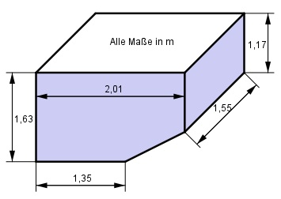
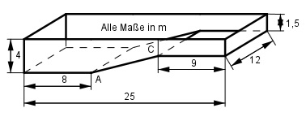

Aufgabe 78
Ein Geschenkkarton aus Pappe hat die dargestellte
Form eines Hauses. Wie viel Pappe braucht man für
ein Haus, wenn 18% Abfall entstehen? Alle Maße in cm.
 Man braucht cm2
Man braucht cm2
Wie löse ich Matheaufgaben?
Volumen
Aufgabe 78 Ein Geschenkkarton aus Pappe hat die dargestellte Form eines Hauses. Wie viel Pappe braucht man für ein Haus, wenn 18% Abfall entstehen? Alle Maße in cm.
Aufgabe 79 Wie groß ist das Füllvolumen V des dargestellten oben offenen Containers, wenn die Wände 5 cm dick sind? Wie groß ist der Schutzanstrich S außen? 
Aufgabe 80 Wieviel l Wasser passen in das Schwimmbecken, bis es randvoll ist? Das Becken wird innen gefliest. Welche Kostenentstehen, wenn 1 m2 Fliesen 45 € kostet?  Füllmenge = l
Aufgabe 81 Wie groß ist die Fläche A des Profilstahls?

Aufgabe 82 Aus einem Baumstamm soll ein rechteckiges Kantholz mit den Maßen 5 cm und 12 cm hergestellt werden. Welchen Durchmesser d muss der Stamm haben? d = cm
Aufgabe 83 Wie groß ist der Inkreisradius einer Raute, deren Diagonalen 52 mm und 88 mm lang sind?
Aufgabe 84 Wie groß sind b, d, l, u und v?
l = cm
Aufgabe 85 Die Basis eines gleichschenkligen Dreiecks ist 6 cm, ein Schenkel 8 cm lang. Wie groß ist seine Fläche A, wenn ein 1 cm breiter Streifen parallel zu einem Schenkel abgeschnitten wird?
Aufgabe 86 Wie lang ist d?
d = cm
Aufgabe 87 Wie groß ist die Fläche A des Trapezes?

Aufgabe 88 Wie groß muss man h₁ machen, damit das gleichschenklige Dreieck halbiert wird?
h1 = cm
Aufgabe 89 Wie groß ist die Fläche A des schraffierten gleichschenkligen Trapezes, das in einem gleichseitigen Dreieck mit dem Umkreisradius r = 6 cm liegt?

Aufgabe 90 Wie groß muss h sein, wenn sich die Fläche des Trapezes zur Fläche des darüberliegenden Dreiecks wie 3 : 2 verhält?
h = cm
Aufgabe 91 Wie groß sind g1 und g2 von dem gleichschenkligen Trapez?

Aufgabe 92 Berechnen Sie die Höhe h, die Diagonale d und die Seite a des gleichschenkligen Trapezes.
d = cm
Aufgabe 93 Ein Trapez mit einer Mittellinie von 6 cm und einer Höhe von 4 cm soll einem gleichseitigen Dreieck flächengleich sein. Berechnen Sie die Länge a einer Dreieckseite und das Verhältnis der beiden Höhen.
Aufgabe 94 Berechnen Sie die Länge der Grundseite g₁ und der Seite b.
b = cm
Aufgabe 95 Ein gleichschenkliges Dreieck ist 12 cm hoch. Es soll durch parallel verlaufende Teilstriche in 3 gleich große Flächen unterteilt werden. In welchen Höhen verlaufen die Teilstriche?
Aufgabe 96 Ein Rechteck ist 4 cm breit und 13 cm lang. Es soll so zerteilt werden, dass zwei Trapeze entstehen, deren Grundseiten 4 cm und 9 cm lang sind. Wie lang ist die Schnittlinie l? l = cm
Aufgabe 97 Von einem gleichschenkligen Trapez sei die eine parallele Seite zweimal und die andere dreimal so groß wie der Schenkel mit 3 cm. Wie groß sind der Umfang U und die Fläche A des Trapezes?